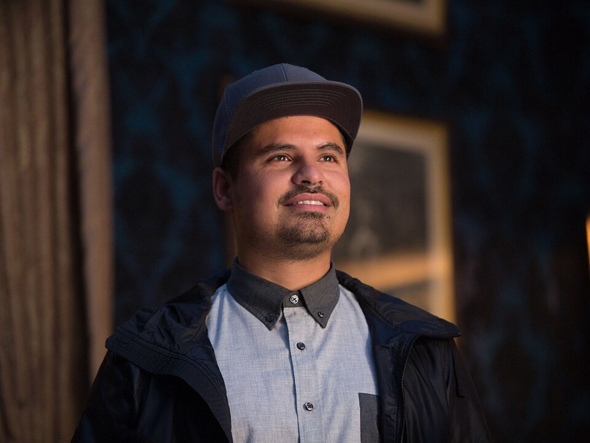

スコット・ラング / アントマン
自宅軟禁中のパパ // 巨大化するバディヒーロー
『シビル・ウォー』でキャプテン側に就いて協定に違反した罪で、FBIから2年間の自宅軟禁処分を受け、愛娘キャシーと穏やかに過ごしていた。しかし軟禁解除の3日前、量子世界にいたジャネット（ピム博士の妻）と精神結合したことで、ホープらに連れ去られ再び前線へ。不調のスーツでミクロサイズから身長20メートルの「ジャイアントマン」まで激しくサイズを変えながら、ラボ強奪戦に挑む。
「今度は俺がホープのバックアップだ。……巨大化した後はめちゃくちゃ眠くなる。誰かオレンジの薄切りをくれ……。」

ホープ・ヴァン・ダイン / ワスプ
ピム博士の愛娘 // 知的で獰猛なハイスペック戦士
ついに母の遺志を継ぎ、背中の羽（ウイング）と両腕の高周波ブラスターを搭載した新型スーツを纏って「ワスプ」として覚醒。スコットを遥かに凌ぐ華麗で無駄のない格闘術と、キッチンを走る塩のボトルや追手のバイクをミリ単位で縮小・巨大化させる戦闘センスを発揮し、闇ルートのディーラーやゴーストを圧倒、母の救出へ執念を燃やす。
「私のスーツには『羽』と『ブラスター』がついてるの。……スコット、サイズを変えるときはタイミングを合わせて！」

エイヴァ・スター / ゴースト
量子位相の狂った暗殺者 // 生き延びるために奪う者
かつてピム博士の助手だった父の量子実験の爆発事故に巻き込まれ、身体の分子がすり抜ける「分子不安定症」となってしまった女性。SHIELDの暗殺者「ゴースト」として利用されてきたが、日々全身を引き裂かれる激痛に耐えており、命の寿命が迫っている。生き延びるために、ジャネットの持つ量子エネルギーを奪おうとピムの移動式研究所を狙い誘拐・強奪を繰り返す。
「私の身体は毎日、バラバラに引き裂かれては戻っているの。……その苦しみがあなたたちにわかる！？私は死にたくない！」

ルイス
X-Con警備会社の社長 // 脅威のマシンガントーク男
スコットの元泥棒仲間であり、現在は堅気となって「X-Con警備会社」を設立したハイテンションな社長。今回のラボ争奪戦に巻き込まれ、闇のディーラーであるソバノフの一味に「自白剤（実際はただの気付け薬）」を注入された結果、スコットとの出会いから現在までの歴史をいつもの超高速・全員分の声真似マシンガントークでベラベラと喋り倒し、敵を爆笑・困惑させる。
「あのさ、俺のダチのスコットがさ、アベンジャーズと空港で大暴れしてさ！……あ、これ自白剤？ヤバい、俺の喋りが止まらないんだけど！」